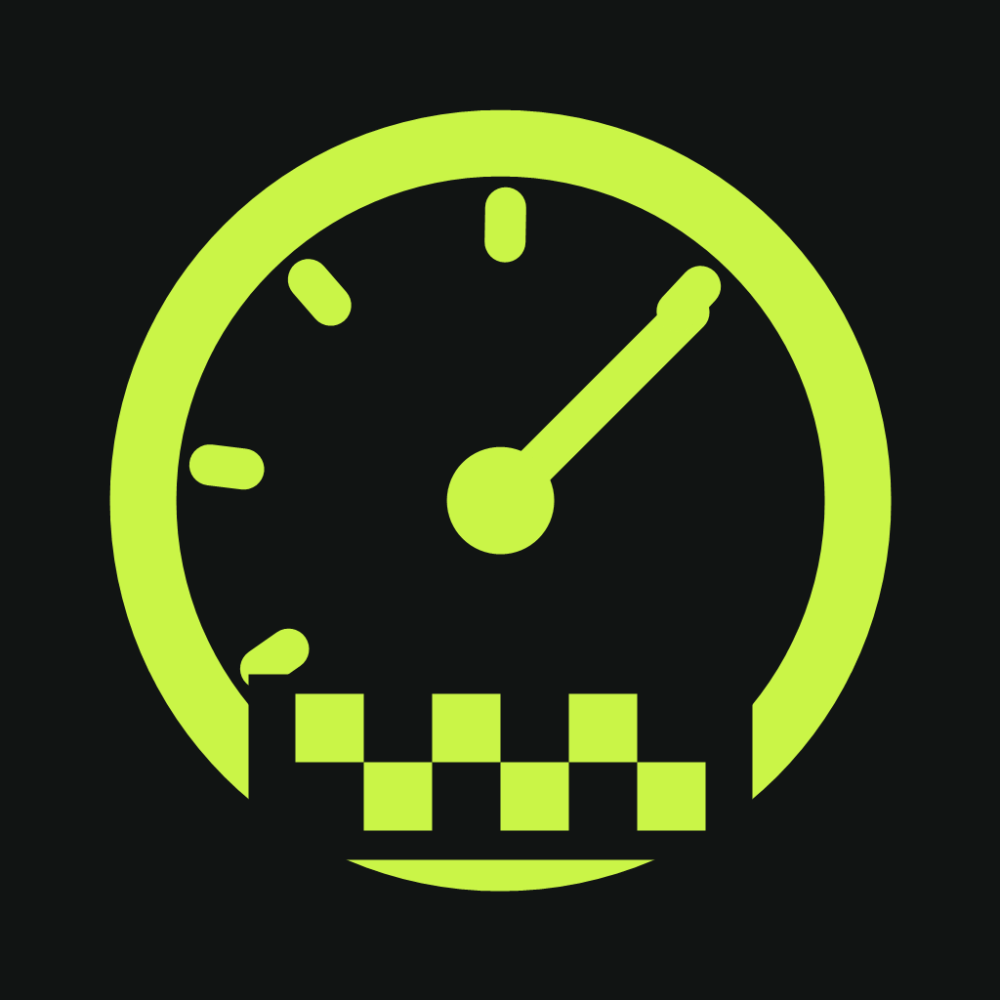

Make every metre count.
Independent TOTAL and TRIP counters. Correct by 1, 10 or 100 metres, or sync the total directly to your roadbook.
TRIPMASTER
RALLYTRIP/ 01NATIVE IPHONE PROJECT · iOS 17+
A rally tripmaster for the seat beside the driver. Keep your distance, follow the roadbook and find your rhythm through every regularity stage.
Pre-release source project. The iOS build and device tests are still pending. A TestFlight version is not available yet.
Interface concept · illustrative values, not live GPS
01 / THE INSTRUMENTS
Separate tools for distance, timing and the next instruction.
Independent TOTAL and TRIP counters. Correct by 1, 10 or 100 metres, or sync the total directly to your roadbook.
TRIPMASTERSet a regularity speed plan with multiple changes. Target time is calculated segment by segment, with a signed time deviation.
REGULARITYCombine multiple reference runs, convert already calibrated readings, or enter a factor directly. Keep vehicle profiles and a history of calibration changes.
CALIBRATIONAdd kilometre points and direction notes. View recorded routes on a map and export saved GPS tracks as GPX files.
ROUTE & ROADBOOK02 / THE FIRST RUN
The app is a native iPhone project. Use a Mac with Xcode to build it; the included demo mode lets you explore without driving.
Get the source projectUnzip the download on a Mac and open RallyTrip.xcodeproj in Xcode 15 or newer. Select the RallyTrip scheme and an iPhone simulator.
Run the app, then enable Einstellungen → Demo-Modus. Choose Tripmaster → Fahrt starten or Regularity → WP starten. The app interface is in German.
Select your signing team in Xcode and run on your device. Allow precise location access for GPS measurement. The included README covers testing and setup.
03 / PROJECT STATUS
All 27 core tests passed with Swift 6.3.3 under Linux on September 8, 2026. Project structure and resources have also been checked. The full iOS build, interface and device tests are still pending.
TestFlight distribution requires a successful signed build and App Store Connect setup. Current uploads require Xcode 26 or newer; Xcode 26 needs macOS Sequoia 15.6 or newer. OBD and external GNSS receivers are planned extensions, not connected features.
Hundredths of a second describe the display resolution, not the accuracy of an iPhone GPS measurement.